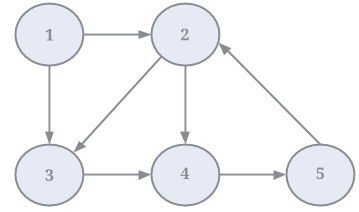

In this tutorial, we are going to learn how to compute several simple graph properties with Gelly. In particular, you will implement a program that computes the degree distribution (the fraction of nodes in the network with a certain degree).
Gelly has a set of methods that retrieve basic information from the input Graph. For example, you can calculate the total number of vertices (also known as size) and the total number of edges (also known as volume). If you want to analyze the IDs, you can retrieve the vertex IDs and the edge pair IDs in a DataSet. Finally, Gelly has methods to compute graph degrees. The degree of a vertex is defined as the number of edges incident to this vertex. In Gelly, we differentiate the degree type, depending on the edge direction:
The list of available properties methods and their return types is shown below.
// get the IDs of the vertices as a DataSet DataSet<K> getVertexIds() // get the source-target pairs of the edge IDs as a DataSet DataSet<Tuple2<K, K>> getEdgeIds() // get a DataSet of <vertex ID, in-degree> pairs for all vertices DataSet<Tuple2<K, Long>> inDegrees() // get a DataSet of <vertex ID, out-degree> pairs for all vertices DataSet<Tuple2<K, Long>> outDegrees() // get a DataSet of <vertex ID, degree> pairs for all vertices, where degree is the sum of in- and out- degrees DataSet<Tuple2<K, Long>> getDegrees() // get the number of vertices long numberOfVertices() // get the number of edges long numberOfEdges()
Let's see the results of these methods when applied to the example graph given below:

| Method | Result |
|---|---|
| getVertexIds() | {1, 2, 3, 4, 5} |
| getEdgeIds() | {(1, 2), (1, 3), (2, 3), (2, 4), (3, 4), (4, 5), (5, 2)} |
| inDegrees() | {(1, 0), (2, 1), (3, 2), (4, 2), (5, 1)} |
| outDegrees() | {(1, 2), (2, 2), (3, 1), (4, 1), (5, 1)} |
| getDegrees() | {(1, 2), (2, 3), (3, 3), (4, 3), (5, 2)} |
| numberOfVertices() | 5 |
| numberOfEdges() | 7 |
Using the properties methods and by combining them with standard transformations of the Flink DataSet API, one can answer several interesting questions about a graph:
Let's see how we can get the answers to these questions with Gelly.
The vertex with the most neighbors is the vertex with the maximum degree in the graph. In order to find this vertex, we simply have to call getDegrees() and then use a max aggregation function on the degrees DataSet to get the ID of the max-degree vertex:
/** find the vertex with the maximum degree **/ DataSet<Tuple1<Long>> maxInDegreeVertex = graph.getDegrees().maxBy(1).project(0);
The answer to the second question is essentially the computation of the average out-degree. In order to compute that, we first retrieve the out-degrees of all vertices in a DataSet using the outDegree() method. Then, we sum up all the out-degrees using the sum aggregation function on the degrees DataSet. Finally, we divide the sum by the total number of vertices, which we retrieve using numberOfVertices():
/** get the number of vertices **/ long numVertices = graph.numberOfVertices(); /** compute the average node out-degree **/ DataSet<Tuple2<Long, Long>> verticesWithDegrees = graph.outDegrees(); DataSet<Double> avgOutDegree = verticesWithDegrees.sum(1).map(new AvgNodeDegreeMapper(numVertices));
private static final class AvgNodeDegreeMapper implements MapFunction<Tuple2<Long, Long>, Double> { private long numberOfVertices; public AvgNodeDegreeMapper(long numberOfVertices) { this.numberOfVertices = numberOfVertices; } public Double map(Tuple2<Long, Long> sumTuple) { return (double) (sumTuple.f1 / numberOfVertices); } }
We can answer the final question by retrieving the edge ID pairs with getEdgeIds(), applying a simple filter transformation, and counting the elements of the resulting DataSet:
long orderedEdges = graph.getEdgeIds().filter(new OrderedEdgesFilter()).count();
private static final class OrderedEdgesFilter implements FilterFunction<Tuple2<Long,Long>> { @Override public boolean filter(Tuple2<Long, Long> edge) { return edge.f0 < edge.f1; } };
Go ahead and try these out with the ReplyGraph data!
Now that you are familiar with Gelly's properties methods, let's try to compute something a little more advanced. Create a graph using the same data as before. Use the sekeleton code we provide below or copy it directly from the Github repository.
// Create a Graph // Read the input file of edges with String Ids // Hint: use includeFields() to only read the first 2 columns of the input // and a mapper to set the 3rd field to NullValue DataSet<Tuple3<String, String, NullValue>> edges = env.readCsvFile(input)... Graph<String, NullValue, NullValue> graph = Graph.fromTupleDataSet(edges, env);
The degree distribution of a network is the probability distribution of the degrees over the network. Essentially, the degree distribution tells us how often a certain degree appears in the input graph. In the example graph in the figure above, 2 out of 5 nodes have a degree equal to 3 (nodes 3 and 4). Thus, the degree distribution of 3 is 0.4. Similarly, the degree distribution of 4 is 0.2 (only one out of the 5 nodes has degree 4; node 2).
The degree distribution can be obtained by computing the fraction of nodes that have each degree value. To do that, we can first compute the degrees for each vertex in the graph and the total number of vertices. Then, we need to count how many vertices have each degree value. Once we have the sums, we only need to divide by the total number of vertices to get the degree distributions for each degree:
// Get the degrees in a DataSet DataSet<Tuple2<String, Long>> degrees = ... // Get the total number of vertices final Long numberOfVertices = ... // Compute the degree distributions. // Hint: Append a count of 1 to each [vertexId-degree] pair and then groupBy the degree // and sum the ones to produce the total number of vertices with each degree. // Then, apply a mapper to compute the distribution DataSet<Tuple2<Long, Double>> degreeDistributions = ... // Write the degree distributions to the output path degreeDistributions.writeAsCsv(output, "\n", "\t"); env.execute();
What do the degree distributions look like? What fraction of nodes has a degree value of 1? The degree distribution of a network is more interesting information that computing averages, because it can help you figure out whether your graph is skewed, i.e. whether there is a small fraction nodes that have disproportionally higher degrees than the rest of the network.